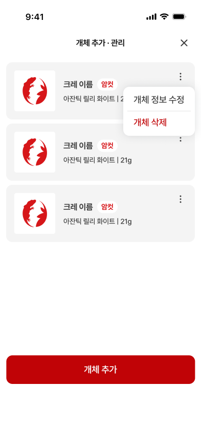
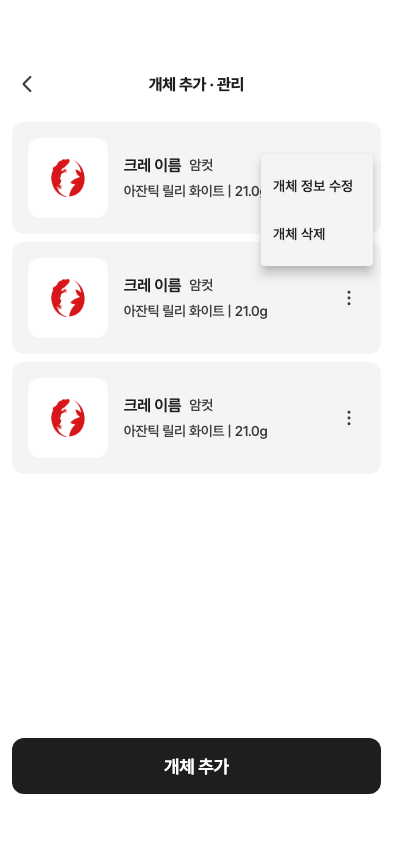

24 · 개체 추가·관리 목록
23번 수정 확정 · 다음 검수
수정 제안
① 우측 닫기 버튼
② 사진 크기/모서리·이름 굵기·성별 배지·21g 표기
③ 더보기 아이콘 상단 정렬 및 메뉴 크기/서체/색상
④ 하단 추가 버튼42pt 위로, 빨간색과 원본 줄높이 적용
카드 크기와 간격은 맞습니다. 아직 코드 수정 전입니다.
Figma 원본 · 메뉴 열린 상태
24 · 현재 제품 위젯 캡처
같은 세 카드로 폰트·색상·간격·버튼 구조를 측정했습니다. 기본 사진 PNG는 이미 확보되어 있습니다.
메뉴 닫힘·10자 이름
10자 이름 잘림은 사진 로딩 후 재촬영에서 재현되지 않았습니다. 그림자를 포함한 위젯 캡처이며 실서버 삭제는 수행하지 않았습니다.
상세 측정표·수정 제안